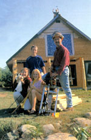
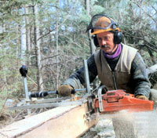
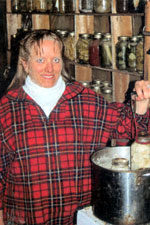
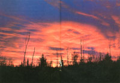

We cut our own lumber and built our off-the-grid home for only $5,000.
During the days of skyrocketing interest rates in the late 1980s, my wife, Jane, and I realized that our dream of owning a home was slipping away. For the first eight years of our marriage, we lived in a rented house in Norwich, Ontario, and we just couldn't save fast enough to buy our own place.
Then, a friend gave us a box of 80 back issues of MOTHER EARTH NEWS. That box opened up a whole new world for us. Reading those magazines, we realized other people looked at the world the same way we did.
In 1992, we purchased 20 acres of bush in Northbrook, a hamlet in eastern Ontario about 150 miles from Norwich. The property had a plowed back road with school bus service, but it didn't have electric power. We were determined to live without the "monthly mortgage," as my wife calls it, to the electric company.
The same friend introduced me to Living the Good Life, the classic homesteading book by Helen and Scott Nearing, and I discovered self-sufficiency. I began corresponding with Helen (Scott had died five years earlier) about our move and our worries. In her motherly way, she patiently guided us through our fears. I still have those letters.
On May 5, 1994, we moved to our property, determined to build our house before the first snow. We had saved $5,000 for this purpose.
We lived in a tent trailer that I had bartered for when working with a local carpenter. By June, we had the land cleared and the concrete footings and block walls done. A local contractor put in the septic system and well, and cleared the land for $700.
Early June saw us agonizing over the high price of lumber. The next week I was at our chain saw dealer to pick up oil and a new chain when I casually mentioned the price of lumber. He asked, "Have you seen these mill attachments that fit on your chain saw? You make your own lumber if you've got trees." Excited, I told him, "I've got 20 acres of trees. Keep talking!"
He explained how it worked and I ordered one (see photo above). When it arrived the next week, I set it up and went to work. The mill attachment cost C$250, but it literally paid for itself the first day.
Throughout June and July I cut lumber. I'm proud to say that not one piece of store-bought lumber makes up our house frame. We cut studs, 6-by-6-foot floor joists, 10-by-10-foot beams, 19-foot-long roof trusses and 12-inch-wide roof boards, all with the chain saw mill. Granted it was smelly, hot and dirty work. But the chain saw mill proved indispensable to this "cheap Scotsman," as my wife calls me.
We only cut mature trees, and we used dead and damaged trees whenever possible. Because we cut the lumber right where the trees fell, all the waste was left to break down and fertilize the forest. In a healthy forest, there is no need to replant; simply let natural regeneration take place.
Building the house turned out to be a slow process. Soon October was closing in on us and we only had the second floor done. A roof was two months' work away. What should we do?
Harborside, Maine
August 18, 1993
Dear Friend
You write and ask how one finds people of similar aims and congeniality. Sometimes one never does. After decades of expressing our opinions on our likes and dislikes there are very few people who agree with us entirely.
With the vegetarians, and hygienists and theosophists we are too radical politically. With our political friends we are too queer with our vegetarian and" "spiritual" ideas. With conservative people we meet socially we're too far to the left in everything. So we go our way alone and maintain our own standards, let the clips fall where they may. You may have to learn to stand alone.
Very best wishes,
Helen Nearing
Words of encouragement from the late legendary homesteader Helen Nearing
After working for nearly five months without a day off, we took a trip to my parents' home in southern Ontario. While we were there, my dad mentioned a large greenhouse grower who suffered hail damage to half his plastic greenhouses. His insurance was replacing all his greenhouses and he had lots of 200-by-400-foot rolls of used plastic to give away.
I loaded two rather unwieldy rolls of plastic into our full-sized van. The children sat on the plastic for the five-hour trip home. The next day we installed two layers of plastic over the second floor to make a makeshift roof, crossed our fingers and moved in. It was Sept 25, 1994.
Finally, we were warm and happy and we lived in the house like that for three years. During those years we started a market garden business and began selling organic produce just like we had before we moved. That provided most of our income, along with part-time jobs. We built a 60-foot greenhouse with cedar (cut with the chain saw mill) and the left-over plastic.
We spent the off-season cutting roof trusses and boards. March 1997 was unseasonably warm and sunny, so we decided to put the roof on. We worked 22 days straight, and at 10:30 Sunday morning of the next day we pounded down the last shingle nail. Then it started to rain.
Jane and I stood on the hill overlooking the house, holding hands and rejoicing as water dripped off the eaves. We were done. Our completed house is 1,400 square feet with eight rooms. It cost only $5,000 but took four years to build.
The children sometimes complain about the kerosene lamps, or no electricity and video games like their friends, but we know they're happy. We recently hooked up solar panels to run a computer and lights. Nearly nine years without a utility bill. Hallelujah!
During slow times, we work on other projects. In 1998, we built a root cellar from field stone, a wonderful building material. It's free for the taking and looks tremendous when the project is done. It's also a great challenge to master a new art. Believe me, it is an art putting irregular stones together and imagining what they will look like when you're finished. After the root cellar, we tackled our fireplace. It looks beautiful and is the focal point of our first floor. Everyone remarks on how well the fireplace fits in with our timber design.
When we're asked why we live the way we do, one event always springs to mind: the ice storm of 1998. Two full days of freezing rain put most of eastern Ontario, southern Quebec and the northeast United States in the dark from downed power lines. It virtually paralyzed the area for weeks. In contrast, our children were ready at the school bus stop the day after the storm ended, but the school was closed for two weeks. We were relatively unaffected.
The hubbub that followed the storm included a gigantic cleanup effort in the affected areas. Our 90-year-old neighbor flatly refused to be removed from her home and placed in an emergency shelter, unequivocally telling her would-be rescuers, "I've lived more years than I care to remember with just my woodstove, my hand pump and a bucket. it's you people who have the problem." She promptly went back into her house, closed the door and proceeded to fire the woodstove to make her supper.
Our neighbor really makes us laugh - our lifestyle is similar to how she grew up more than 80 years ago. She smiles when she talks to us because we can relate to each other. Most people today just don't get it.
I know that anyone with a modest amount of energy and perseverance could do what we've done. I owe a great deal to the people who have gone before me and shed light on our own journey to self-sufficiency. Special thanks go to Helen and Scott Nearing. I hope they're smiling at our accomplishments, wherever they may be. And thanks to MOTHER EARTH NEWS most of all. There was a time when I read readers' reports to learn. Now I hope that I can help someone else in return.
Mother Earth News
|
 The Oke family (from left, Jane, Andrew, Karen and Les) show off the chain saw attachment they used to build this inexpensive home. Andre, the youngest child, waves from the roof. |
 Les Oke cut all the lumber for his family's house using this Granberg Alaskan Mark III chain saw mill attachment. |
 Jane Oke cans vegetables from the family garden. |
|
 The view from the Oke's front door. |
|
|